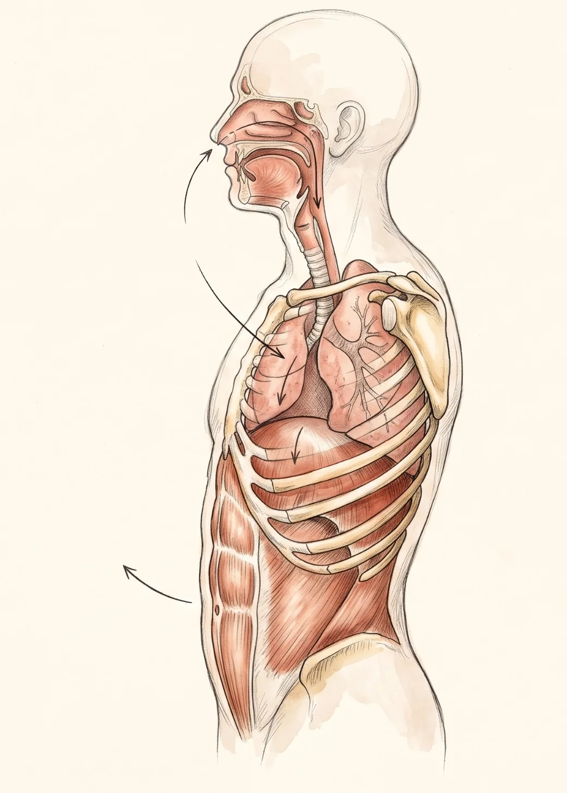
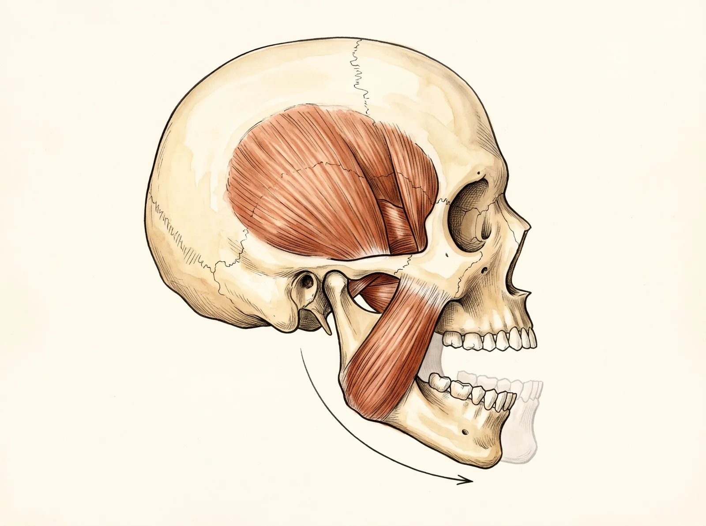
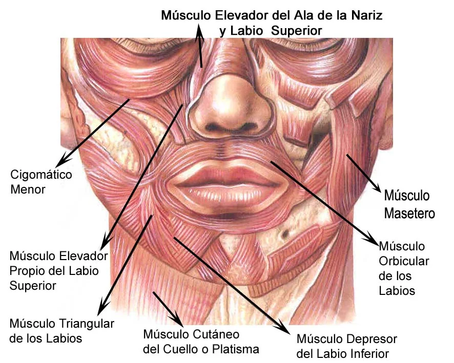
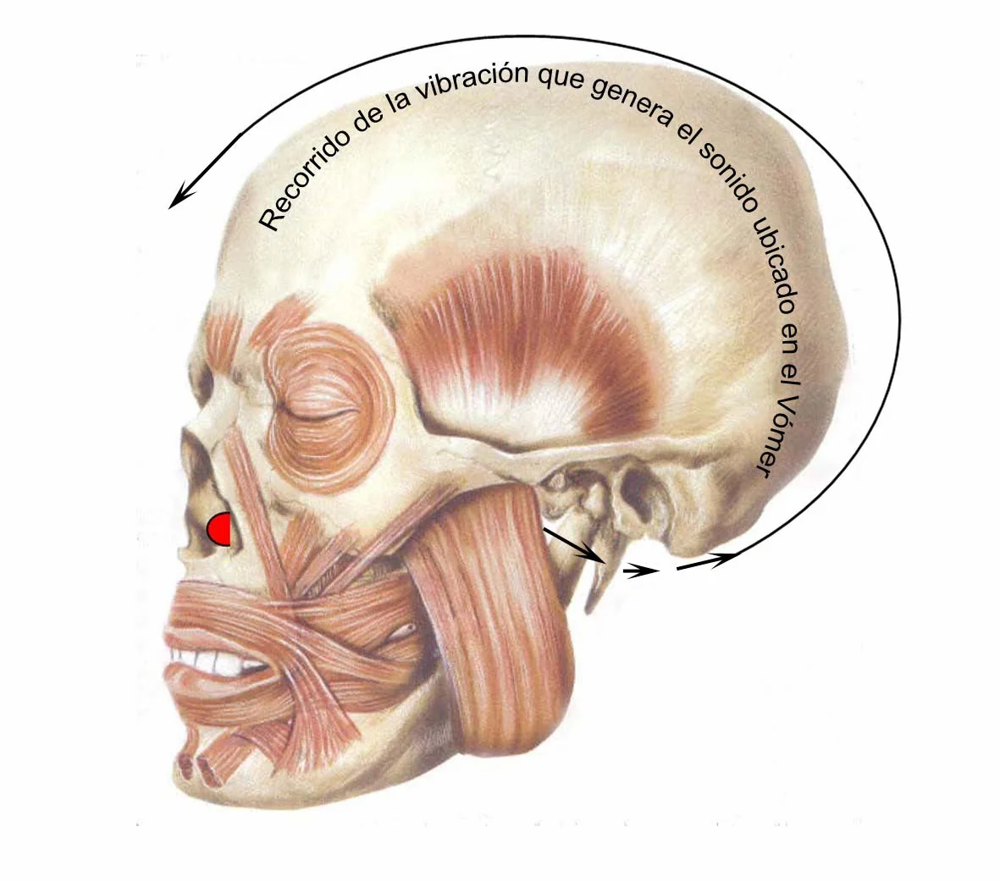
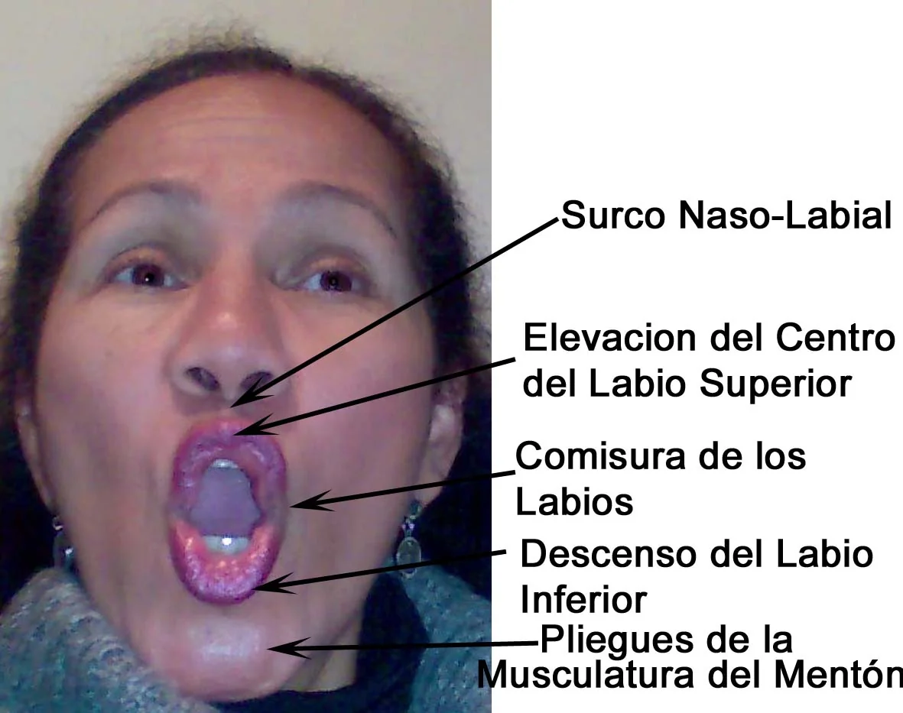

La meva tècnica vocal pas a pas
L’anatomia d’una veu lliure
Un mètode que no demana imaginar colors ni buscar els aguts «a dalt». Explica quins músculs hi intervenen, com es mouen i com portar cada moviment a l’obra que vols cantar.
«La tècnica vocal és la base sobre la qual es construeix la interpretació.»Carmen Moreno
El principi
Comprendre el moviment, no imitar el so
Molts cantants aprenen per imitació: copien el so del seu mestre o d’un intèrpret que admiren i confien que un dia sortirà sol. La Carmen proposa el camí contrari. Primer es comprèn el gest anatòmic que produeix un so lliure. Després s’entrena en la vocalització i, finalment, s’aplica a l’obra.
Per això insisteix que no convé cantar «imaginant un color»: les emocions fluctuen a l’escenari i el color imaginat amb elles. En canvi, si el moviment tècnic és correcte, el so es col·loca sol al vòmer i té les qualitats que se n’esperen.
Al principi, els moviments musculars de cada interval poden semblar estranys. Amb la pràctica es veu que estan en harmonia amb l’anatomia del rostre i tenen una lògica d’execució, igual que en el ballet, que exercita a la barra posicions i moviments per aconseguir després els gestos subtils de l’expressió.
És important no imitar cap intèrpret; és millor analitzar l’estratègia tècnica.Carmen Moreno · 2015
No garanteixo diversió, sinó el plaer d’assolir l’execució d’un treball musical artístic satisfactori.Carmen Moreno
Mapa interactiu
Quatre gestos, un so
Fes clic a cada punt de l’esquema o a cada pestanya per descobrir què passa al cos i com es treballa a classe.




Respiració abdominal
L’aire que sosté la frase
La musculatura costal i abdominal, amb la projecció del recte major de l’abdomen, genera la pressió de suport al so. Aquesta pressió permet sostenir les frases, les notes llargues i els aguts sense forçar la gola.
La respiració alta, de pit, produeix aguts de curta durada, obliga a fer servir força física i, a la llarga, pot danyar les cordes vocals.
Si l’obra comença amb compassos de piano o orquestra, canta mentalment aquelles frases i respira amb el piano on correspongui. Així l’entrada de la veu no és un cop: és una continuïtat.
Protrusió de la mandíbula
Obrir espai abans de la nota
La mandíbula avança cap endavant i en diagonal, «com la vara d’un trombó». Aquest moviment el fan els músculs pterigoïdals lateral i medial, i deixa lliure la nota aguda abans que arribi.
Si en cantar la boca es desvia cap a un costat del rostre, només actua un dels dos pterigoïdals: falta comprendre bé la protrusió.
En un interval que comença en nota greu, fes la protrusió de la mandíbula amb els llavis arrufats i fes el gir mandibular uns instants abans de la segona nota. L’agut quedarà lliure i recolzat, i el podràs sostenir sense que soni estrident.
Comissures i llavis
Acostar els harmònics, timbrar el so
Les comissures es mantenen a prop, sense obrir la boca en un somriure. El llavi inferior baixa i deixa veure les dents de sota. La part central del llavi superior s’eleva, gràcies al múscul elevador del llavi superior, per projectar els sobreaguts.
En acostar les comissures també s’acosten els harmònics, i el so guanya timbre i brillantor.
Als aguts, la «e» se substitueix per una «a» sense obrir les comissures: el «pensier» dels tenors es canta «pensiar». El públic continua entenent la paraula i el so queda lliure. Per començar una frase en una nota aguda, col·loca la boca com a l’exercici EA-EA-EA.

Col·locació al vòmer
Totes les notes, al mateix lloc
L’objectiu final de la vocalització és detectar el so al vòmer i sentir-ne el recorregut. Quan respiració, mandíbula i llavis treballen junts, el so surt timbrat, lliure i brillant, i els harmònics acompanyen la nota fonamental.
Inclinar el cap per buscar els aguts «a dalt» indica que encara no s’ha comprès la col·locació: l’atenció ha de tornar al vòmer, a la protrusió i a l’elevador del llavi superior.
En un salt d’octava, prepara la boca per a la nota greu com si anessis a emetre directament l’aguda i canta-les totes dues en aquesta posició. Així queden al mateix punt del rostre, sense més esforç del necessari.
Una idea clau
Vocalitzar no és escalfar
Per a la Carmen la vocalització no és un tràmit abans de cantar. És tècnica aplicada als intervals que després apareixeran a la partitura.
Cada exercici es tria pels seus intervals: un salt d’octava, una segona, una frase que comença en una nota aguda. Mentre es vocalitza s’observa l’execució del moviment. Després, aquesta mateixa comprensió s’aplica als mateixos intervals de l’obra. Amb la coral fa el mateix: dedica mitja hora a vocalitzar abans de cada assaig i de cada concert.
Aquesta idea va centrar el seu article a l’International Choral Bulletin de la Federació Internacional per a la Música Coral (2015).
Els artistes del cant no escalfem: escalfa l’esportista. Nosaltres fem tècnica quan vocalitzem.Carmen Moreno

De l’exercici a l’obra
Així és una hora de classe
La mateixa classe, en línia o presencial, organitzada en dues meitats. Així la descriu la mateixa Carmen.
0–30 min Vocalització: tècnica vocal
- 1
Dos objectius clars
Abans de cada exercici explica quin interval es treballa (una 2a, una 3a…) i quins músculs del rostre hi intervenen, com el zigomàtic major o el triangular dels llavis.
- 2
Imatges en 3D
El primer dia, i sempre que calgui, mostra animacions 3D de la respiració, la protrusió de la mandíbula i la col·locació del so.
- 3
Demostració
Explica i mostra com s’executa l’exercici abans de començar a vocalitzar.
- 4
Intervals progressius
De les 2es i 3es a intervals cada vegada més exigents, sense baixar ni pujar més del que correspon al teu nivell.
- 5
Correcció al moment
Comenta els «destells de comprensió» i, si hi ha una errada, atura l’exercici i l’explica d’una altra manera fins que es corregeix.
- 6
Sincronització
A poc a poc demana sincronitzar la respiració abdominal amb els moviments de la cara i la mandíbula. A uns els costa poc temps i a d’altres més.
Es pot allargar segons el nivell i el que necessiti cada alumne.
30–60 min Aplicació a l’obra
- 7
Aplicació
El que s’ha comprès als exercicis es porta a l’obra que has triat. Per començar prefereix una obra del Renaixement, per la seva estructura harmònica; després, altres gèneres segons la teva tessitura.
A l’aula de Barcelona la metodologia és la mateixa, amb un mirall al costat del piano perquè vegis cada gest mentre cantes.
Senyals que convé corregir
El que el cos està dient
Alguns gestos en cantar revelen quina part de la tècnica encara no s’ha comprès. La Carmen els observa a cada vocalització.
La boca se’n va de costat
Si la mandíbula es desvia a la dreta o a l’esquerra, només actua un dels dos pterigoïdals. Cal vigilar el moviment frontal de protrusió.
El cap s’inclina
És la tendència a buscar els aguts «a dalt». Falta comprendre la col·locació al vòmer.
L’agut surt estret
Començar una frase aguda amb la boca tancada estreny el so. La boca ha de donar llibertat a aquesta nota des del principi.
Falta l’aire
La respiració alta, de pit, dona aguts curts i obliga a forçar. La pressió de suport neix a l’abdomen.
Es busca un color
Imaginar el color del so no garanteix res, perquè l’emoció canvia a l’escenari. El moviment correcte, sí.
Se somriu en cantar
Obrir les comissures en un somriure separa els harmònics i resta timbre. Les comissures es mantenen a prop.
Preguntes freqüents
Sobre el mètode
El que més pregunten els qui s’acosten per primera vegada a la tècnica vocal de la Carmen.
Prova una classeCal saber música o tenir bona veu per començar?
No. L’estudi de la tècnica vocal no té límit d’edat ni de formació acadèmica: n’hi ha prou de voler cantar millor. Saber solfeig ajuda, però no és un requisit per començar.
Serveix per a música moderna o només per al cant líric?
La base tècnica és la mateixa. A la música moderna o melòdica les comissures no s’exigeixen tan properes, per mantenir l’estil, i la pressió de suport és menys exigent. Si després vols passar a la lírica, només cal completar aquests detalls.
Quant es triga a notar resultats?
Depèn de cada persona i del seu punt de partida. El que la Carmen observa sempre és que el temps invertit en tècnica es recupera després en l’estudi de les obres: es resolen abans les dificultats i s’aprèn a cantar bé.
Què vol dir «independitzar-se» del mestre?
Que comprenguis els moviments anatòmics fins a poder corregir-te tu. L’objectiu de la Carmen és que no depenguis d’ella per sempre i que acabis dominant el teu instrument: la teva veu.
On puc aprofundir-hi?
Al seu llibre Mi técnica vocal paso a paso (en castellà), amb DVD en 3D, a la sèrie de vídeos didàctics i als consells de l’Acadèmia.

La teva primera classe
La teva veu ja sap cantar. Ensenyem-li com.
Explica a la Carmen què vols cantar i què et costa. Et proposarà un punt de partida i un horari que encaixi amb tu, en línia o a Barcelona.